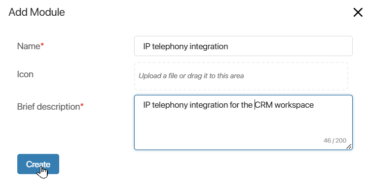
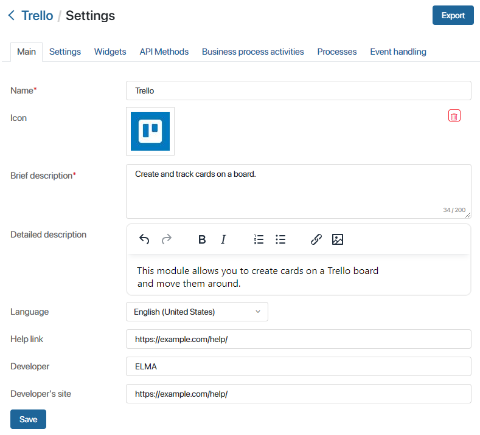

You can create custom modules for the BRIX platform. For example, you can make new widgets for forms or business processes activities with complex logic. Such modules can be used multiple times and for different purposes. You can set up integration with a third-party system or add a custom API method.
To create a custom module:
- Go to Administration > Modules.
- Click the + Module button and in the window click Create.
- Specify the name and description of the module, select an icon, and click Create.

After that, the module management page will open. Module configuration settings are broken down into separate tabs:
- Main. The tab contains general information about the module: its name, icon, short and full description, link to the documentation that describes how to use the module, the developer of the module, and the link to the developer’s website.
- Settings. The tab contains the global properties of the module.
- Widgets. On this tab, you can add custom widgets for business process forms, apps, workspace pages, and more.
- API Methods. On this tab, you can create module methods accessible from external systems. For example, it can be a method that starts a business process from an external application. You can also call such methods from scripts on the forms of widgets, processes, or pages in the system.
- Business Process Activities. You can add new business process activities on this tab.
- Processes. You can add business processes that work within the module and are used to configure activities.
- Services. Integrate custom portable microservices into the module to expand its functionality and address various tasks in BRIX.
- Event Handling. Create and set up the way the system behaves when certain events occur. You can use scripts for event handling, set up processes to start, and send messages about the event to an external service.
- External app. Connect an external application to provide third-party services with access to protected resources in BRIX using the OAuth2 authorization protocol. After this, data from BRIX can serve as a method of authentication on a third-party service, as well as a source for requests via Web API.
- External services. Set up integration with a web service using the SOAP (Simple Object Access Protocol) protocol to exchange data with BRIX. This will allow access to the web service description language (WSDL) and enable the use of its methods and data types in server-side scripts to address tasks in BRIX.
- Translations. Add .po files with translation of resources into languages that differ from the source language of the module. To enable the interface translation option and get access to the tab, contact BRIX tech support
You can download the configured module as an .e365 file. See the Export a custom module article for details. When your module is imported, users can manage it.
You can change the module settings. To do this, in Administration > Modules, hover over the module and click the gear icon that appears. The module management page will open. After making changes, save them.
Main tab
You can add or edit general information about a module.

- Name*. The name of the module.
- Icon. An image representing the module.
- Brief description*. Information about the module functionality that is displayed in the Administration workspace.
- Detailed description. Full description of the module functionality.
- Language. The source language of the interface in which the module was created.
- Help link. Link to the documentation describing how to use the module.
- Developer. The developer (the development company) that created the module.
- Developer's site. Link to the developer’s website.
Specify the necessary information and click Save.
Found a typo? Select it and press Ctrl+Enter to send us feedback